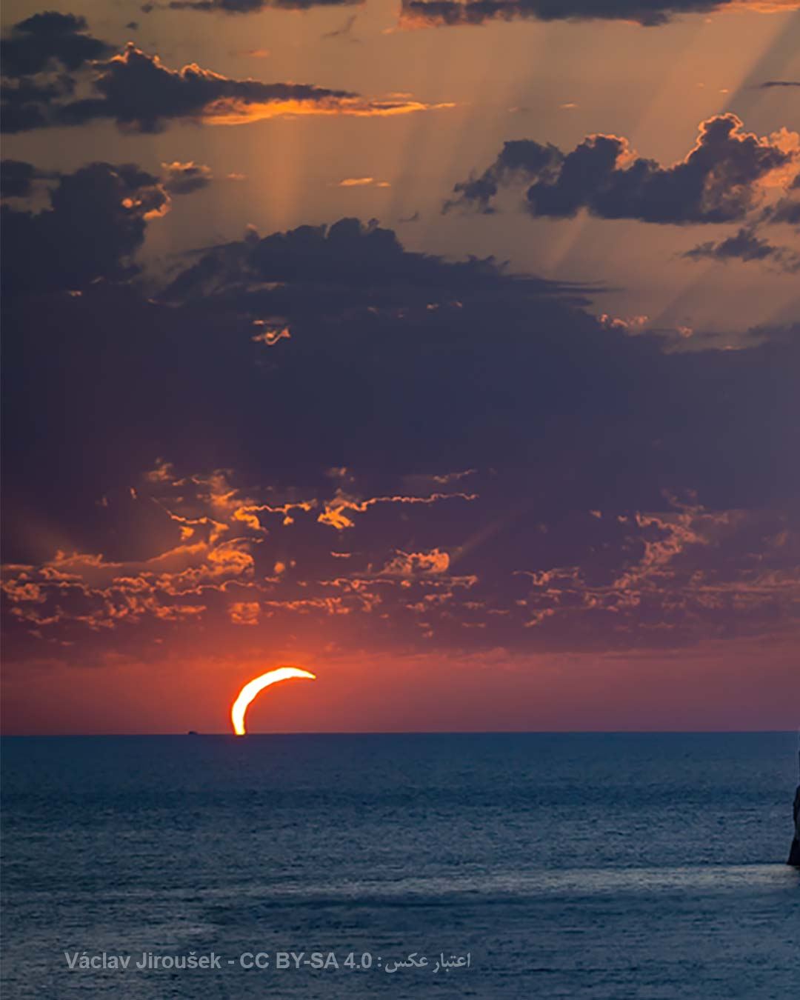
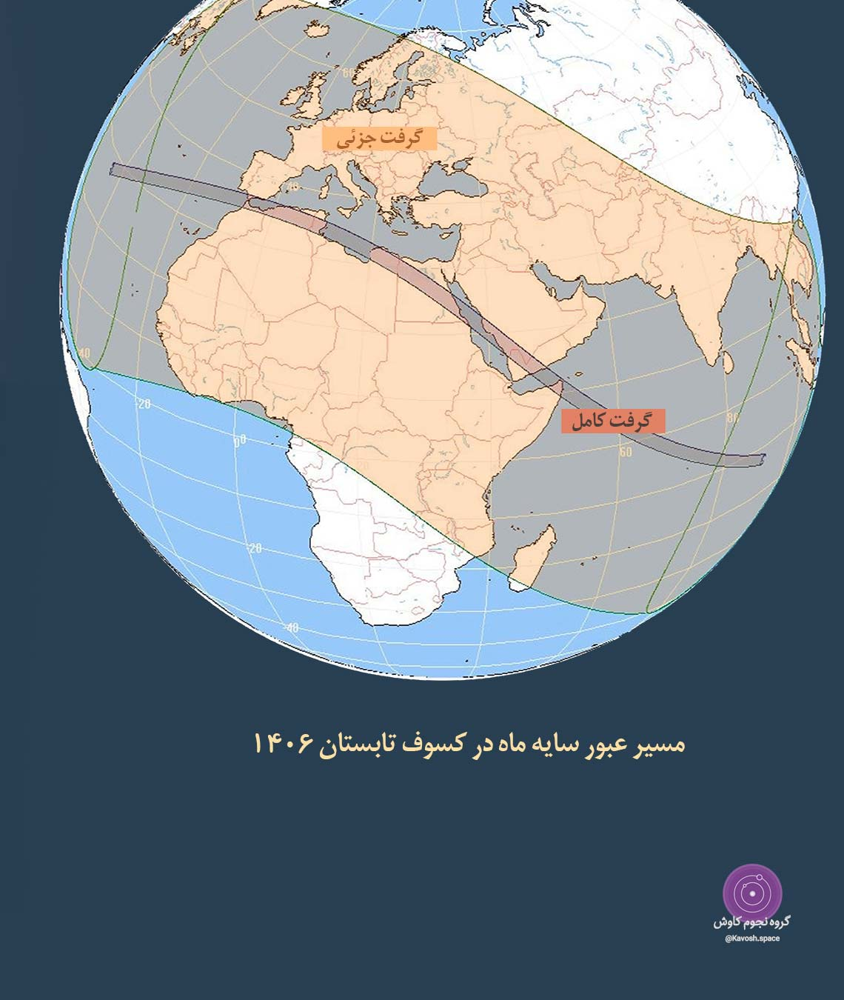
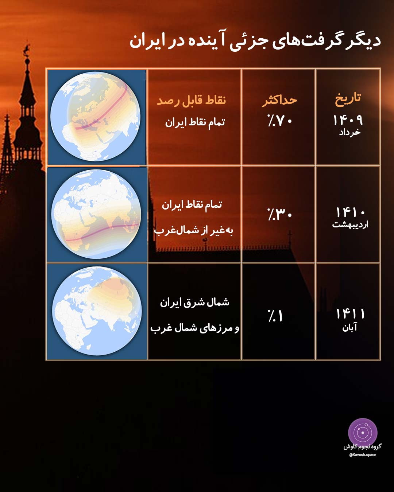
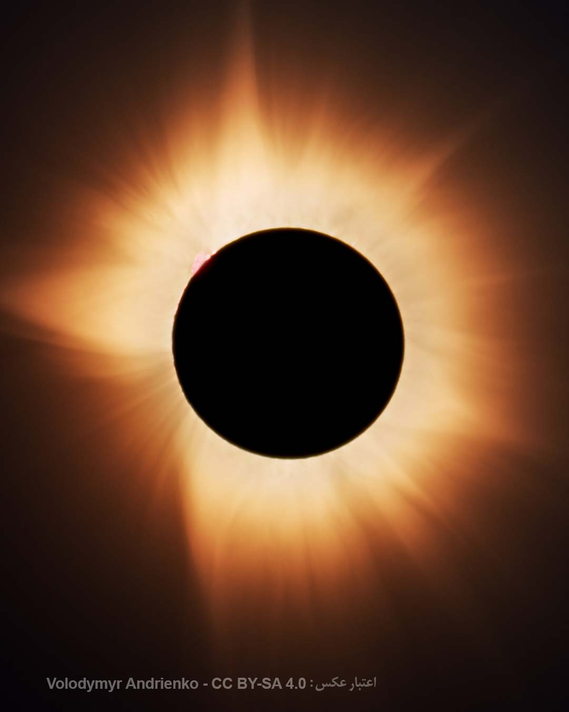

کسوفهای آینده در ایران
اگر از جویندگان سایه ماه هستید و تماشای کسوف شما را به سفرهایی ماجراجویانه فرا میخواند احتمالا در این روزهای سختگذر که حتا سفری کوتاه به کشوری همسایه به سان سفر به سیارات دیگر است، تماشای یک خورشیدگرفتگی برای شما به آرزویی دست نیافتنی بدل شده باشد.
اما بیایید نگاهی به تقویم کسوفهای ایران بیاندازیم و پنج کسوف آینده را که در ایران رخ خواهد داد با هم مرور کنیم. بهویژه واپسین کسوف که ازجمله شگرفترین گرفتهای خورشید در ایران خواهد بود.
نزدیکترین خورشیدگرفتگی در ایران سال آینده در تاریخ ۱۱ مردادماه ۱۴۰۶ رخ خواهد داد. یک گرفتِ جزئی که طی آن قرص خورشید بیش ۵۰ درصد توسط ماه پوشیده میشود.

این کسوف از تمام نقاط ایران به ویژه در جنوبِ غرب ایران قابل مشاهده است و شهرهای آبادان و شلمچه بیشترین درصد گرفت را شاهد خواهند بود.
این گرفت جزئی بخشی از یک گرفت کامل است که مسیر سایه اصلی آن از باستانیترین نقاط غرب آسیا و شرق آفریقا عبور خواهد کرد.
مناطق باستانی در حاشیه رود نیل در مصر یکی از نقاطی است که میشود این کسوف را از آنجا بهصورت گرفتگی کامل تماشا کرد و از همین حالا ظرفیت پذیرش تمام هتلهای این بخش از مصر تکمیل شده است.

پس از این گرفت، ایران شاهد سه کسوف جزئی دیگر نیز در سالهای آتی خواهد بود که در جدول رصدی زیر میتوانید مشاهده کنید.

اما شگرفترین کسوف تاریخ ایران را در آخرین روز سال ۱۴۱۲ خواهید دید، گرفتی کامل که همزمان با نوروز و اعتدال بهاری روی میدهد و سایه اصلی گرفت از خراسان جنوبی تا بوشهر را درمینوردد و از مناطق باستانی زیادی مانند پاسارگاد در شیراز عبور خواهد کرد و رصدگران از حالا برای آن لحظه شماری میکنند.

در خاطرتان باشد رصد خورشید و پدیدههای مرتبط با آن همواره نیاز به فیلترهای تایید شده توسط نهادهای علمی دارد و رصد خورشید بدون فیلتر مخصوص به شدت به چشمان شما آسیب میرساند.